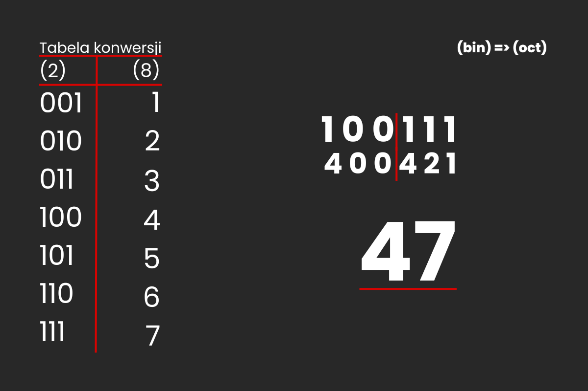
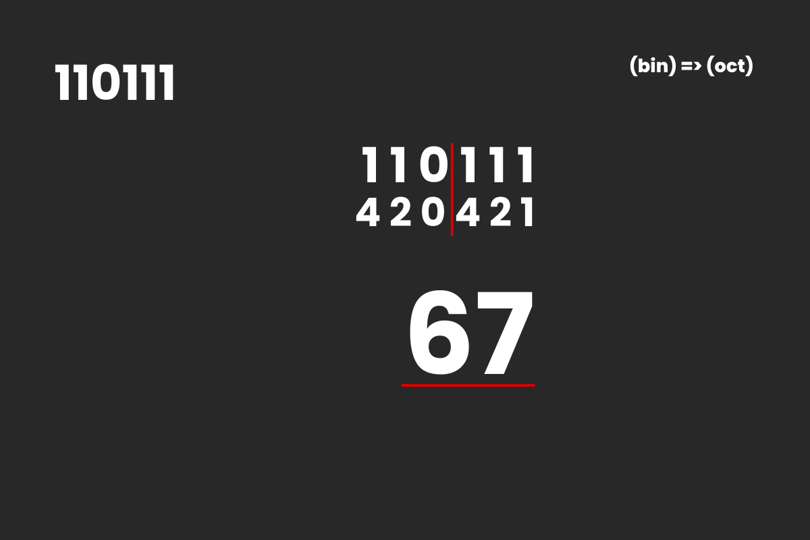
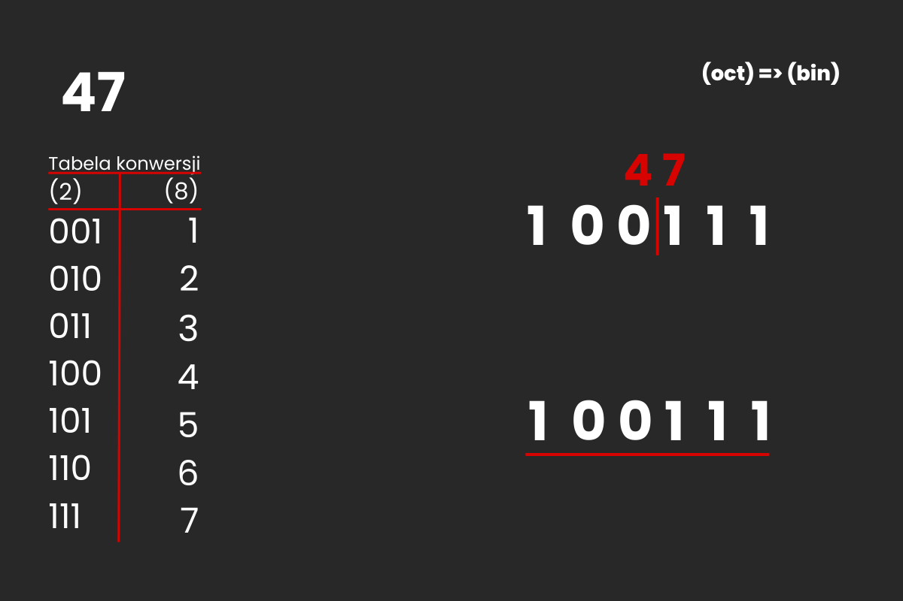
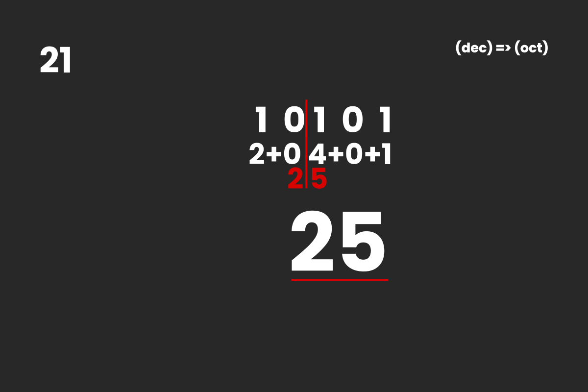
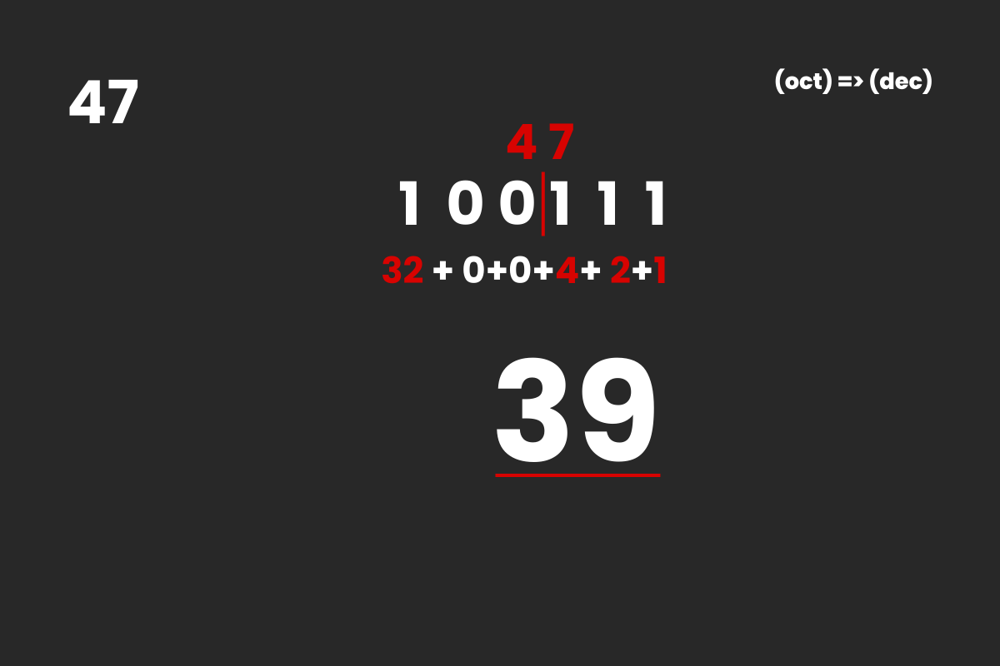

System ósemkowy - posiada osiem znaków: 0-7. Jest rzadko stosowany; można go spotkać n.p. podczas przypisywania uprawnień w systemie komputerowym Linux
Konwersja z systemu dwójkowego na ósemkowy
Dzielimy naszą liczbę co 3 bity (licząc od prawej). Następnie obliczamy każdą część jak w systemie binarnym i zapisujemy każdą z części. Dzięki temu otrzymujemy wynik: 47(8)
Przykład
Zapisz liczbę 110111 (2) w systemie oktalnym
Dzielimy liczbę co trzy bity od prawej. Potem obliczamy i zapisujemy wynik. Otrzymaliśmy liczbę 67(8)
Przykład
Zapisz liczbę 47 (8) w systemie oktalnym
Zapisujemy każdą cyfrę z liczby 47 (8) w systemie binarnym. Po zapisaniu wszystkich cyfr otrzymujemy ostateczny wynik: 100111(2)
Przykład
Zapisz liczbę 21 (10) w systemie oktalnym
Zamieniamy liczbę 21 (10) na liczbę w systemie binarnym. Następnie dzielimy liczbę co trzy bity od prawej. Potem obliczamy i zapisujemy wynik. Otrzymaliśmy liczbę 25(8)
Przykład
Zapisz liczbę 47 (8) w systemie dziesiętnym
Każdą z cyfr liczby 47(8) zamieniamy na liczbę w systemie binarnym. Otrzymany wynik konwertujemy na system dziesiętny, otrzymując wynik: 39(10)